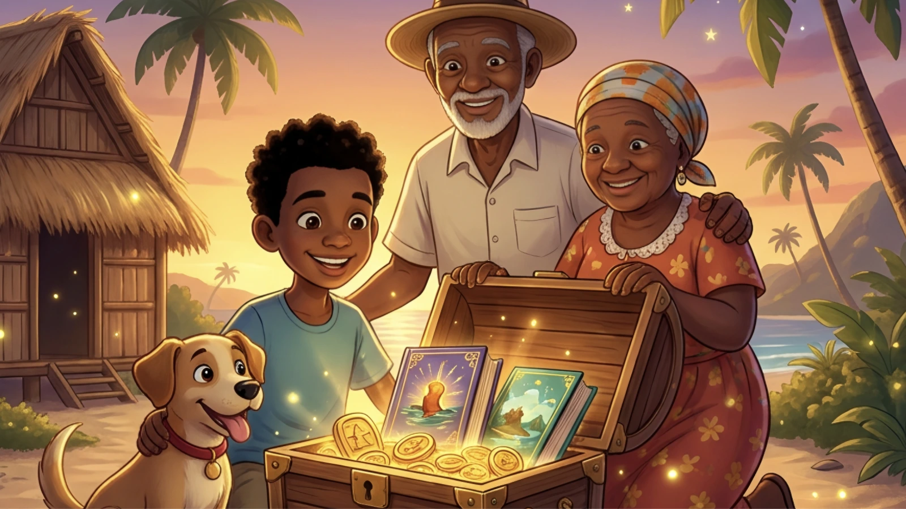
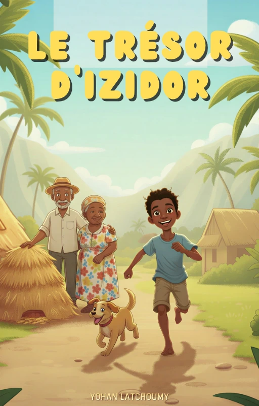

Izidor et le trésor
Découvrez l'histoire d'un personnage rusé et débrouillard, emblématique des contes de La Réunion. Une aventure de malice et de sagesse issue de la tradition orale créole.

L'histoire d'Izidor, un conte réunionnais plein de malice
L’histoire d’Izidor fait partie de ces récits réunionnais qui traversent le temps grâce à la parole et au plaisir de raconter. Dans l’univers des contes péi, Izidor est un héros populaire simple et proche des gens ordinaires, entraîné dans des aventures où l’astuce, l’humour et la ruse prennent le dessus sur la force brute.
À La Réunion, les contes ne servent pas seulement à divertir. Ils transmettent une manière de voir le monde, des valeurs de solidarité et un lien fort avec la langue créole. L’histoire d’Izidor s’inscrit dans cette tradition du rakontaz zistoir, où la parole vivante, savoureuse et pleine de sagesse réunit petits et grands.
Ce qui sauve Izidor face aux situations inattendues ou à des opposants plus forts que lui, c'est son sens de l'observation, sa débrouillardise et sa capacité à s'adapter avec les moyens du bord. Il devient ainsi un symbole d'ingéniosité et d'humour.

Disponible en version brochée & Kindle
Prolongez l'aventure
Découvrez nos jeux interactifs liés à l'univers d'Izidor et testez votre mémoire.